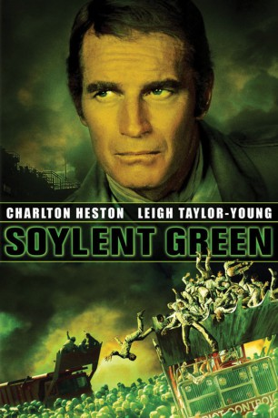
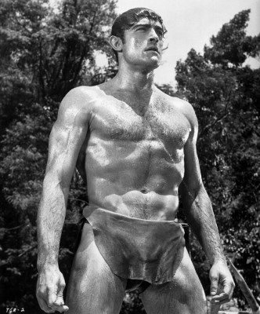

#3872 Soylent Green
Alternativ: Jahr 2022... die überleben wollen (Originaltitel)
 
 IMDB-Wertung: 7.1 / 10
IMDB-Wertung: 7.1 / 10  Tomatometer: 73
Tomatometer: 73  Metascore: 0
Metascore: 0 
2022 wächst auf der Erde kein Gras mehr. New York ist zu einem Moloch mit 40 Millionen Einwohnern geworden. Menschen essen die Synthetiknahrung Soylent Green. Detektiv Thorn teilt mit dem alten Sol Roth ein Zimmer. Als ein Manager ermordet wird, findet Thorn mit Hilfe von dessen Geliebter Shirl, die auch seine Geliebte wird, Hinweise auf die Nahrung und wird von allen Seiten behindert. Sol geht in eine Selbstmordklinik. Thorn entdeckt, als er dem Transportweg der Leiche folgt, das große Geheimnis hinter Soylent Green.
Jahr: 1973
Dauer: 96 Minuten
FSK: 16
Land: USA Studio: MGMTonspuren:
Untertitel:
Auflösung: 1080p (1920x800) Größe: 6082 MB
Genre: Thriller, Sci-Fi, Mystery
Regisseur:  Richard Fleischer
Richard Fleischer
Drehbuch: Jim Thomas
Soundtrack:
Darsteller:
 Charlton Heston als Detective Thorn
Charlton Heston als Detective Thorn- Leigh Taylor-Young als Shirl
 Chuck Connors als Tab Fielding
Chuck Connors als Tab Fielding Joseph Cotten als William R. Simonson
Joseph Cotten als William R. Simonson Brock Peters als Chief Hatcher
Brock Peters als Chief Hatcher- Paula Kelly als Martha
 Edward G. Robinson als Sol Roth
Edward G. Robinson als Sol Roth- Stephen Young als Gilbert
- Lincoln Kilpatrick als The Priest
 Roy Jenson als Donovan
Roy Jenson als Donovan- Leonard Stone als Charles
 Whit Bissell als Gov. Santini
Whit Bissell als Gov. Santini Celia Lovsky als The Exchange Leader
Celia Lovsky als The Exchange Leader- Dick Van Patten als Usher #1
- Marion Charles als The Furniture Girls
 Robert Ito als Shoe Seller , uncredited
Robert Ito als Shoe Seller , uncredited-  Mike Henry als Kulozik
- Morgan Farley als Book #1
- John Barclay als Book #2
 Belle Mitchell als Book #3
Belle Mitchell als Book #3 Cyril Delevanti als Book #4
Cyril Delevanti als Book #4- Forrest Wood als Attendant
- Faith Quabius als Attendant
- Jane Dulo als Mrs. Santini
- Tim Herbert als Brady
 John Dennis als Wagner
John Dennis als Wagner- Jan Bradley als Bandana Woman
- Carlos Romero als New Tenant
- Pat Houtchens als Fat Guard
- Joyce Williams als The Furniture Girls
- Erica Hagen als The Furniture Girls
- Beverly Gill als The Furniture Girls
- Suesie Eejima als The Furniture Girls
- Cheri Howell als The Furniture Girls
- Kathy Silva als The Furniture Girls
- Jennifer King als The Furniture Girls
- Bern Hoffman als Plastics Seller , uncredited
- Nora Marlowe als Soylent Crumbs Seller , uncredited
- Ida Mae McKenzie als Woman Calling for Revolution , uncredited
- Richard Sterne als TV Announcer , uncredited
- Jeff Winkless als Suicide Parlor Attendant , uncredited
Datei: X:\1973\Soylent Green (1973, FSK16, 1920x800).mkv seit 24.06.2016
Festplatte: HD 1971-1979
 Es gibt insgesamt 30 Filme in der Gruppe '1973'
Es gibt insgesamt 30 Filme in der Gruppe '1973'